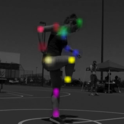

Human pose regression by combining indirect part detection and contextual information
Diogo C. Luvizon, Hedi Tabia, David Picard; Computers & Graphics. 2019
I received my PhD in Computer Vision and Machine Learning from Paris Seine Université (Université de Cergy-Pontoise), France, in 2019. My thesis was developed in the ETIS lab under the supervision of David Picard and Hedi Tabia and supported by the Brazilian National Council for Scientific and Technological Development (CNPq). I received my Master's degree in Applied Computing (Graphics and Computer Vision) from the Federal University of Technology - Paraná (UTFPR), Brazil, in 2015, and my Bachelor's degree in Electronics Engineering also from the UTFPR, in 2011. In between, I have worked with computer vision applied to embedded and real time systems. Currently, I am AI Researcher at Samsung R&D Institute Brazil.
My research interests are mainly on computer vision and machine learning, specially applied to 3D scenes and to human behaviour understanding.
Here is a list of my most relevant publications:
Diogo C. Luvizon, Hedi Tabia, David Picard; Computers & Graphics. 2019
Diogo C. Luvizon, David Picard, Hedi Tabia; The IEEE Conference on Computer Vision and Pattern Recognition (CVPR). 2018
Diogo Carbonera Luvizon, Hedi Tabia, David Picard; Pattern Recognition Letters. 2017
Diogo C. Luvizon, Bogdan T. Nassu, Rodrigo Minetto; IEEE Transactions on Intelligent Transportation Systems (ITS). 2016
[pdf] [code] [demo] [bibtex] [ieeexplore]
Diogo C. Luvizon, Bogdan T. Nassu, Rodrigo Minetto; IEEE International Conference on Acoustics, Speech and Signal Processing (ICASSP). 2014
[bibtex] [ieeexplore]
For a complete list of publications, please check in my google scholar.
2nd prize on Concurso Latino-Americano de Dissertações de Mestrado (CLTM), Conferência Latino-Americana de Informática (CLEI), 2016, Chile.
LUVIZON, DIOGO C.; MINETTO, RODRIGO; NASSU, B. T. "Sistema para Medição de Velocidade Instantânea e Média de Veículos por Reconhecimento de Padrões em Imagens e Vídeos Digitais", INPI - Instituto Nacional da Propriedade Industrial, Registro No. BR10201503191, 2015 (Brazil, in portuguese).
Public source code related to my work is available on github. Otherwise, a link will appear in my publications.
UEC-1-IMD Int. images et multimedia